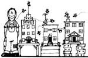

Believe it or not, I produce all the honey I can eat (with plenty left over to give away and sell) less than two miles from downtown San Francisco. Better yet, I was able to start my hive with wild bees that I caught myself ... and there's no reason why other folks can't get into a backyard bee business in the same way!
My enterprise began some time ago, when an evening's conversation turned to the subject of bees. On the spur of the moment, I thumbed through the yellow pages to "Beekeepers" . . . and dialed the first number I saw. That impromptu call resulted in a half-hour's discussion about bees and how to get them free! It seems that my informant and his mother owned several hives in the country, and-every spring-these folks would be called upon to remove swarms of wild bees that had gathered in nearby cities. It was, of course, an easy matter for the experienced beekeepers to collect such "wandering hives" and sell them to beginning "honey farmers".
I was excited by the prospect of producing my own honey, and asked the 'keeper to phone me the next time a swarm was reported.
The call came a month later, but it was the beekeeper's mother who phoned. She told me that a mass of bees had settled in a downtown parking lot. Unfortunately, neither she nor her son was available to help me out, but-after the lady assured me that swarming bees are too preoccupied to sting anyone-I let my trusting heart (and foolhardy nature) get the better of me ... and decided to try and capture the insects on my own.
The swarm was a crawling mass of wings and legs, perched on a stone wall and oozing over onto the sidewalk. I inched over to the cluster and-very carefully-began sweeping bees toward my newly purchased hive with a piece of cardboard. The insects were buzzing wildly, and incoming stragglers circled me from every direction. . . but I wasn't stung. Perhaps, I thought, my lack of defenses convinced the bees that I meant them no harm.
Good intentions, however, weren't enough to insure my success ... because after a minute or two the steady hum rose in intensity and the swarm began to disperse. I grabbed my hive and gave chase, ending up on a neighboring rooftop just in time to see the last of the swarm disappear into a hole in a brick wall. Since I had no way to remove the insects from this "fortress", I released the few that I had managed to capture and went home.
Weeks passed without another call from my beekeeping tutors, and I began to think that the swarming season was over. Luck was with me, though, because the 'keeper's mother did phone again ... to say that another cluster had settled behind a florist's shop in nearby Daly City. And this time, the woman assured me, she would come along to provide encouragement and protective clothing ... although the actual catching would still be up to me.
We were pulling into the shop's parking lot as the "new" swarm took to the air. The bees flew from tree to tree, searching for a fitting spot, and finally settled on a limb that protruded from a nearby hedgerow. I set a garbage can under the churning mass of insect life, placed my hive atop the can, gritted my teeth, and-following my helper's directions-shook the bee-covered branch down hard.
The insects dropped-still clustered-into my hive. I slid the frame (a support which would later hold honeycombs) into place, put on the lid, and the swarm was mine! From there it was simply a matter of waiting until the evening of the following day (to allow the bees to get used to their new house and to be sure that they'd all be back from their daytime explorations), nailing a strip of board over the hive's entrance, and carrying my prize home.
Since I captured my swarm in mid-June, I suspected that it would take the rest of the summer for the hive to build up to its full strength of some 50,000 workers. Even my "bee teachers" predicted that-if I were lucky-I would only get about 25 pounds of surplus honey during the first season. By the time the November rains began, however, the city bees had astonished all of us by providing me with 50 pounds of the delicious ambrosia ... over and above their winter's food supply that I left in the hive for them.
The next pollen season-urged on by unusually warm weather-began early ... and I had already emptied two 25-pound "supers" (extra frames that provide storage space for surplus honey) by early April. However, my hive was also growing overcrowded, and I hurried to order additional supers from Sears, Roebuck and Company (a good source of most any apiary equipment).
Unfortunately, the new equipment arrived too late ... and a large number of my bees swarmed out of the area. That meant that the remaining nucleus of workers, drones, and queen would have to build the hive's population once again, and I assumed that there would be little honey production during the rest of that year. Those urban bees surprised me for a second time, however. By September they had reached full strength ... and I had stored away another 100 pounds of liquid gold!
Some folks will find it hard to believe that a beekeeper can be successful in the middle of a city as populous as San Francisco. I think I can explain why my apiary operation works, though, and why city bees are even more productive than their country cousins!
I keep my hive on top of a large crate in the back yard ... an area that is completely enclosed by a six-foot-high fence. Because of this setup, the bees are protected from overly curious children and animals (and vice versa). Furthermore, since the insects have to clear the fence when they fly out to forage, my honey-makers are a good way up in the air before they ever leave the yard. Not even my next-door neighbors knew about my hobby until I presented them with gifts of homegrown honey ... and one taste of the sweet product was enough to still any complaints that my beekeeping might ordinarily have prompted.
The yields from my single colony might seem phenomenal to some beekeepers, but I feel that this production is a direct result of the hive's urban environment. Country apiarists, you see, often have to rely on one main "honey flow" . . . in the spring when crops and fruit trees bloom. My bees produce well in the early season too ... and have a steady supply of flowers to work on right up till winter. Almost every yard in the city has ornamental blossoms, shrubs, or trees ... and eucalyptus grows in most of the vacant lots. Best of all, there aren't any other hives in the area, and my insects don't have to compete in their search for honey makin's.
So my bees are kept pretty busy, but I don't have to do much at all to insure a steady supply of sweets! My work involves emptying a full super every month or so, and packaging the fruit of my insects' labors. And, while commercial beekeepers do much more to manage the production of their bees, my hands-off policy provides me with all the honey I want.
I use section combs (which allow the bees to "prepackage" their delicious liquid in individual one-pound boxes) because I can store or sell the little containers in inexpensive plastic bags. Better still, when honey is kept in combs it holds onto every bit of its natural goodness. And, when it's time to use the sweetener, I simply cut away the wax "capping" and let the golden syrup flow into a bowl. I give my honey to friends, use a good bit of it myself, and sell enough of the leftovers to cover my costs and then some!
All in all, I've found backyard beekeeping to be a wonderful (and inexpensive) way to bring a little "country flavor" into big city life!
|
 |
|
|